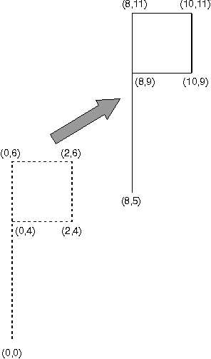

<HTML>
<HEAD>
<TITLE>Translating a Graphics Object</TITLE>
</HEAD>
<BODY>
<H1>Translating a Graphics Object</H1><!-- entering slot 39 -->
<P>
If Tx is equal to 8 and Ty is equal to 5, then:
<P>
<I>x'</I> =<I> x</I> + 8
<P>
<I>y'</I> =<I> y</I> + 5
<P>
The original five points are transformed: (0,0) Ä (8,5)
<BR>
(0,4) Ä (8,9)
<BR>
(0,6) Ä (8,11)
<BR>
(2,4) Ä (10,9)
<BR>
(2,6) Ä (10,11)
<BR>

<P>
The following figure shows the effect of translating the flag by (8,5).
<!-- Unable to decode bitmap format -->
<P>
Translation by (8,5)
<P>

<P>


<P><HR>

<A HREF="037_L3_TranslationTransform.html">[Back: Translation Transformations]</A> <BR>
<A HREF="039_L4_MATRIXLFStructurefor.html">[Next: MATRIXLF Structure for Translating]</A> 
</BODY>
</HTML>
